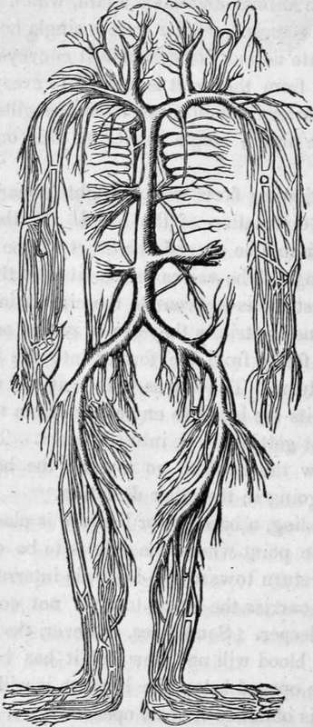
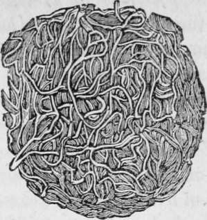
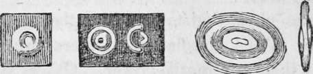

The Circulation Of The Blood. Part 3
Description
This section is from the book "Human Physiology For The Use Of Elementary Schools", by Charles Alfred Lee. Also available from Amazon: Human Physiology, for the Use of Elementary Schools.
The Circulation Of The Blood. Part 3
19. When a limb is amputated by a surgeon, he only ties the arteries. The reason is, that as these convey the blood from the heart, the patient would soon bleed to death unless some means were adopted to prevent it. .But, although the veins are as large as the arteries, yet, as they carry the blood back to the heart, they do not bleed, although they are not tied.
The Venous System.
20. The blood can also be seen to move in the small ca pillaries by means of a microscope. The fine web of a frog's foot is generally used for this purpose. Microscopical observations, however, should be received with great allowance, for no two observers have ever found the same appearances. One makes out the globules of the blood to be round, another square, and another tubular. Some physiologists, it is to be feared, find just what they wish to find. Owing to the refraction of light, the microscope is little to be depended on in examining the minute structure of bodies.
21. The motion of the blood is chiefly owing to the action of the heart. This contracts with great force, and in the following manner. The auricles both contract at the same instant, forcing the blood which is received from the lungs, and the general circulation, into the ventricles ; these then contract at the same moment; the right one sending the blood through the lungs, the left one through the aorta. This alternate action is constant, as long as life continues. The reason why the auricles act together, and the ventricles the same, is probably owing to the fact, that both have a common septum or dividing wall, so that one cannot contract without the other.
22. The ventricles contract more suddenly and powerfully than the auricles, and they are three times as long in dilating or expanding, as contracting. When the ventricles contract, the apex or point of the heart rises up and strikes against the left wall of the chest, between the sixth and seventh ribs, and this can be felt by placing the hand on the left side. The left ventricle has much thicker and stronger walls than the right, because it has a greater distance to throw the blood ; but the right ventricle will hold more than the left, because the venous system is more capacious than the arterial.
23. The velocity of the blood in the arterial system grows slower in proportion to its distance from the heart, while that in the veins is accelerated the nearer it approaches the heart. The reason why the blood moves slower in the arteries as it recedes from the heart, is owing, probably, to friction, and the increased capacity of the vessels, for the arterial system is compared to a cone, whose apex is at the heart. The course of blood in the arteries is intermittent, or by jets; not that it does not flow all the time, but its flow is more or less rapid, according as the ventricles are contracting or dilating.
24. The force with which the blood is thrown from the heart is variously estimated. Hales computed that the left ventricle of a horse exerted a force equal to 113 pounds, and that of a man at 51 pounds. Some think that the contraction must overcome the whole pressure of the air upon the body, which is equal to forty thousand pounds. As we cannot, however, correctly estimate the influence of breathing and other causes, we cannot, with any degree of certainty, tell what degree of power is exerted by the heart. Dr. Arnott thinks, however, that the heart acts with a force of about six pounds on every square inch, and as the left chamber of the heart has about ten square inches, the whole force exerted is sixty pounds.
25. The Blood
The blood is not necessarily red, it may be white, as in the fish; transparent,- as in the insect; yellowish, as in the reptile; and indeed there is no animal in which the blood is red in all the parts of its body.
26. In a short time after blood is taken from the body it separates into two portions, by a process called coagulation, viz. 1. a watery portion called serum, and a solid portion called coagulum or clot; the white substance which forms the upper part of the clot is called fibrin, and the red mass under it, the red particles. The fibrin is the material from which all the solids of the body are formed. (See Fig. 6.)
27. The red particles owe their colour, it is supposed, to the presence of iron; though some say it depends on an animal substance of a gelatinous nature. These are usually described as being minute globules, but the latest mieroscopic observations show that they are flattened cakes, having rounded and slightly thickened margins, as shown in the following cut :
A portion of fibrin, showing its fibrous structure and the net like arrangement of its fibres.
Fig. 7.
1. A particle of human blood as it appears when transparent and floating. 2. The same, seen as illuminated. 3. The same, one half -illuminated. 4. A particle of frog's blood floating. 5. The same, seen edge wavs. All these objects are magnified five hundred diameters.
28. The blood constitutes about one fifth part of the weight of the whole body; so that the whole quantity of blood in the body of an adult may be estimated at between thirty and forty pounds. A complete revolution of the blood takes place every three minutes, and there are about five hundred and fifty revolutions every twenty four hours. The contractions of the ventricles, or the pulse, is about seventy five times in a minute, in a grown person, and one hundred and forty in an infant: in old age about sixty.
Now as two ounces of blood are thrown out of the heart at each beat, thirty five pounds on an average, must pass through the heart every three minutes ; seven hundred pounds every hour; and sixteen thousand pounds, or eight tons, every twenty four hours.
Continue to:
- prev: The Circulation Of The Blood. Part 2
- Table of Contents
- next: The Circulation Of The Blood. Part 4
Tags
humans, anatomy, skeleton, bones, physiology, organs, nerves, brain